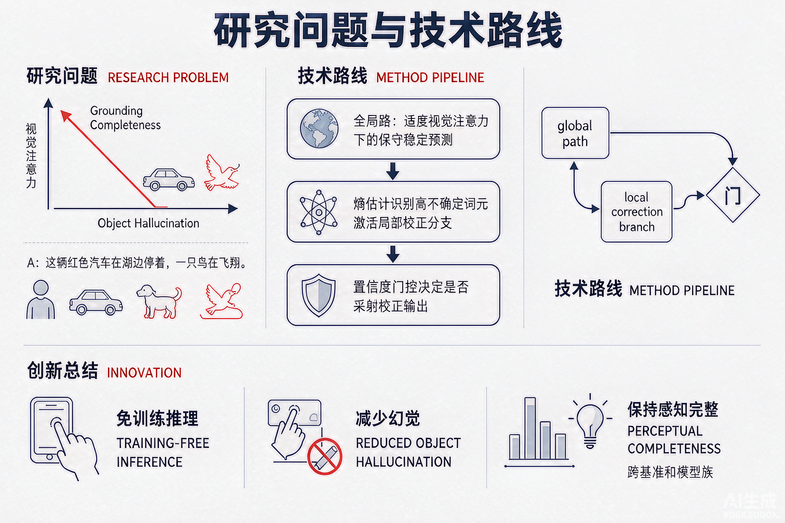

Problem
解决的问题
多模态大模型存在物体幻觉（描述图像中不存在的物体）。分析发现：增强视觉注意力虽提升定位完整性，却会增加幻觉（尤其是句尾的加性幻觉），存在根本性权衡。
Research on LLMs and VLMs · 2026 · EMNLP
Mitigating Object Hallucination in MLLMs with Global-to-Local Visual Attention Correction
Problem
多模态大模型存在物体幻觉（描述图像中不存在的物体）。分析发现：增强视觉注意力虽提升定位完整性，却会增加幻觉（尤其是句尾的加性幻觉），存在根本性权衡。
Value
GLVAC 可无缝集成到现有 MLLM、无需重训或外部模块，在多个基准与模型族上有效降低物体幻觉，同时保持感知完整性（代码开源：GitHub Trusted-LLM/GLVAC）。
Paper-grounded Academic Summary
主要创新性：提出 GLVAC——免训练的双路推理框架，自适应结合视觉注意力的全局保守与局部增强：全局路在适度视觉注意力下保持稳定可靠的预测，局部校正分支只对经熵估计识别的高不确定词元动态激活，再由置信度门控决定是否采纳校正输出。
学术影响力：为缓解“视觉注意力 vs 幻觉”的权衡提供了即插即用、可迁移到多种模型族的实用方案。

Technical Route
Innovation